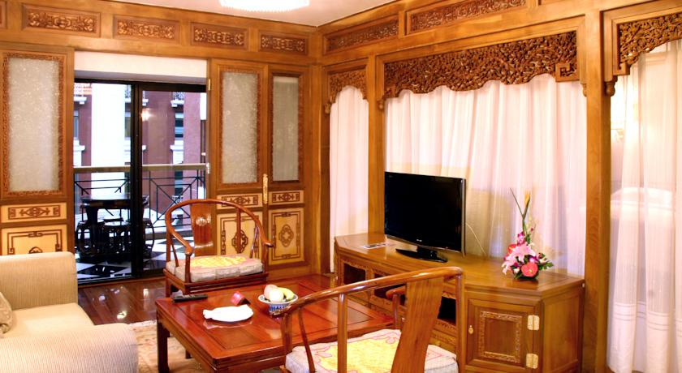
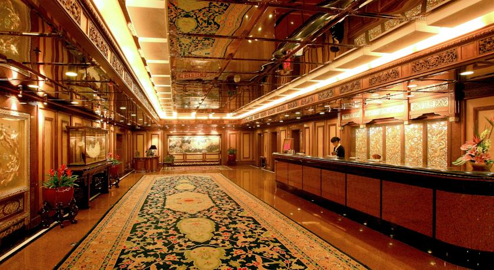

Grand Hotel Beijing



Гранд-отель Beijing находится в удивительном месте в восточной части проспекта Чаньгань всего в нескольких шагах от площади Тяньаньмэнь и Запретного города. Этот великолепный 5-звездочный отель в архитектурном стиле династий Мин и Цин располагает крытым бассейном, сувенирным магазином и несколькими стильными ресторанами изысканной кухни. На всей территории отеля предоставляется бесплатный Wi-Fi.
Гранд-отель Beijing расположен в 5 минутах ходьбы от оживленной пешеходной улицы Ванфуцзин с торговыми центрами, местными ресторанами и развлекательными заведениями. Станции метро Tian’anmen East и Wangfujing (Линия 1) находятся менее чем в 6 минутах ходьбы от отеля, благодаря чему гости смогут легко добраться до большинства достопримечательностей города. Поездка до Международного аэропорта Шоуду занимает приблизительно 40 минут.
Номера оформлены в изящном стиле с деревянной мебелью и китайским антиквариатом. Все номера отличаются современным комфортом и удобствами и располагают телевизором с плоским экраном и кабельными/спутниковыми каналами, сейфом и гладильными принадлежностями. В номерах есть ванная комната с халатами и тапочками.
Гости могут поддерживать себя в форме, тренируясь в хорошо оборудованном фитнес-центре, расслабиться в сауне, а также заказать однодневные экскурсии в экскурсионном бюро или взять напрокат автомобиль, чтобы осмотреть этот очаровательный город. В отеле есть бизнес-центр и залы для проведения совещаний, которыми могут воспользоваться бизнес-туристы.
В гранд-отеле Beijing можно попробовать широкий ассортимент деликатесов из разных частей страны. В кафе Red Wall подают сытные спреды "шведский стол", а в ресторане Song Yuan - блюда японской кухни. Во второй половине дня гости могут отдохнуть с напитком в баре Fountain.
Это любимая часть города Пекин среди наших гостей согласно независимым отзывам.
Grand Hotel Beijing — принимает гостей с 8 мая 2013
Номеров в отеле: 217